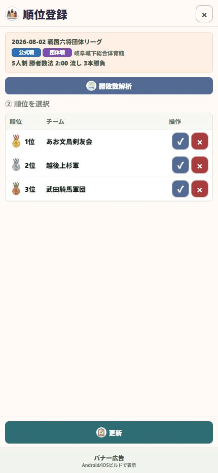

19 / 共有する
順位を確認・登録する
順位の記録と、順位付きの勝敗数解析を使い分けます。
操作の入口ホーム → 順位 → 大会 → 勝敗数解析
大会を選ぶ
「順位」で対象の大会を開きます。
勝敗数を解析する
「勝敗数解析」で選手・チームの勝敗数と順位を確認します。この一覧は共有ボタンから画像で共有できます。
1～3位を登録する
実際の大会結果に合わせて1～3位を選択します。解析結果を使う場合は「この順位を登録」から進みます。
更新する
登録内容を確認して更新します。選手の個人統計にも順位記録として表示されます。

